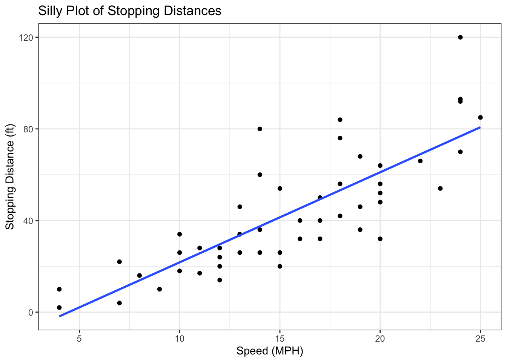
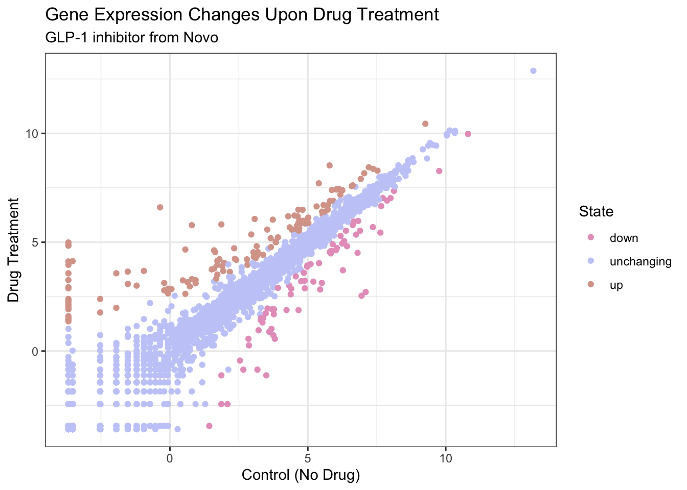
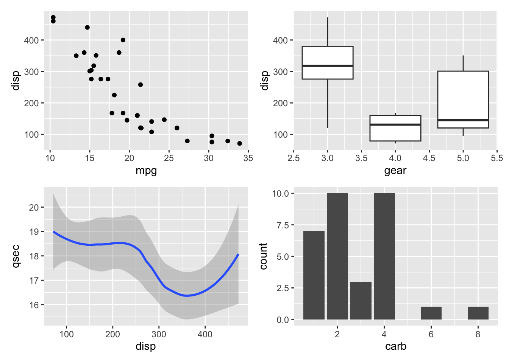
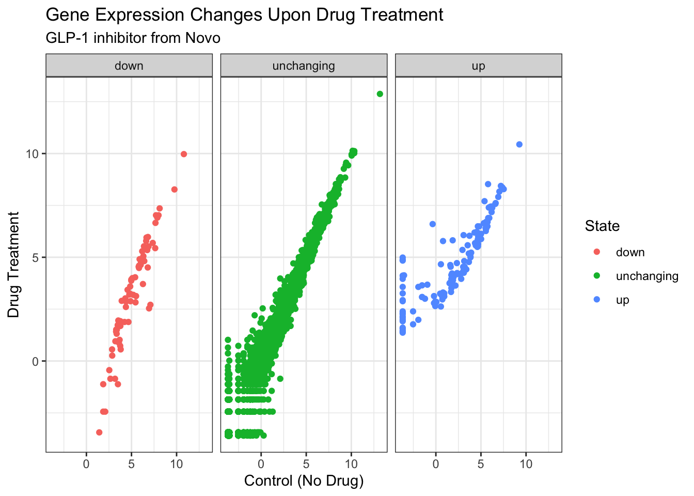
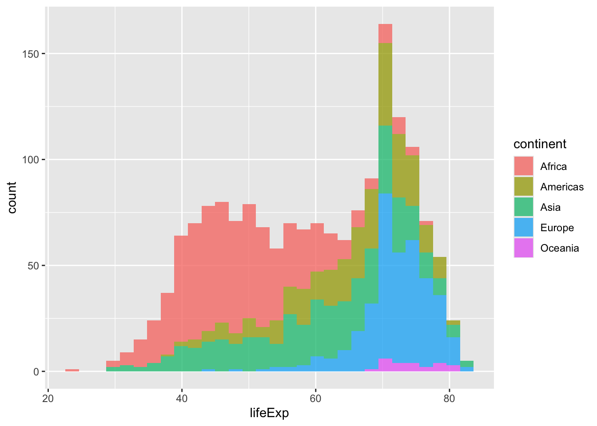
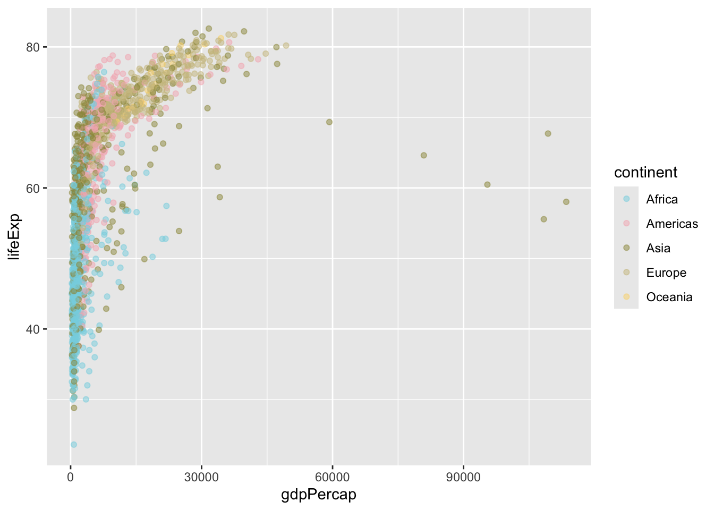
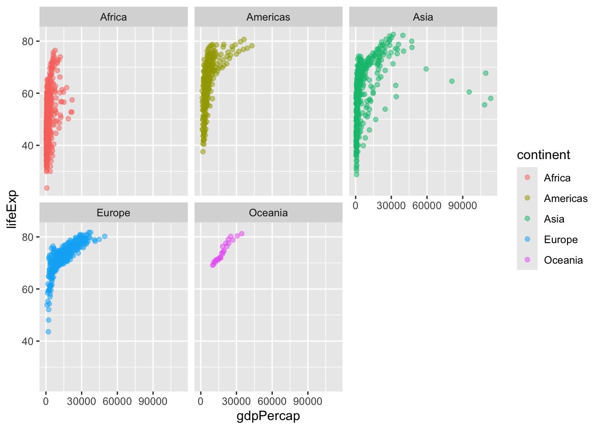
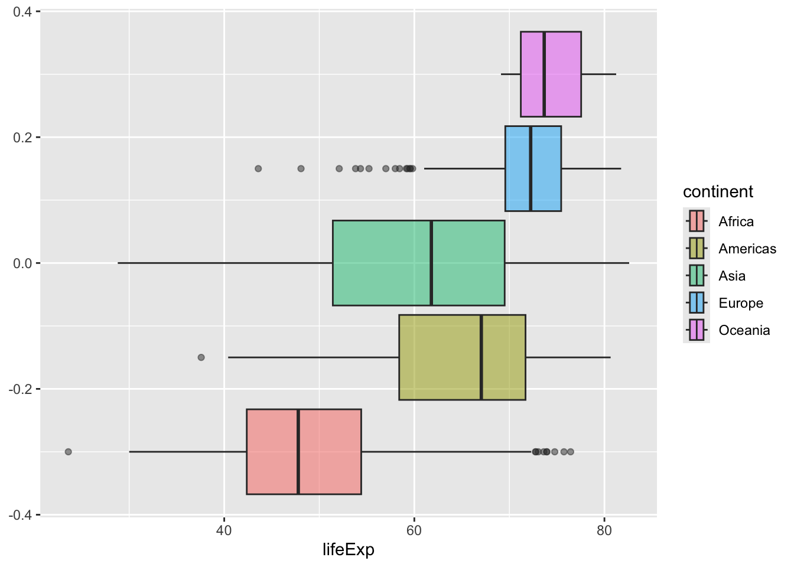

head(cars) speed dist
1 4 2
2 4 10
3 7 4
4 7 22
5 8 16
6 9 10Today we are going to learn all about the ggplot2 package in R.
There are many ways to graph in R. These include”base and R graphics” (like the plot() function we used the other day) and add on packages like ggplot2.
We can use the in-built data frame cars to try out plotting (short-cut to insert code section is OPT,CMD,I):
head(cars) speed dist
1 4 2
2 4 10
3 7 4
4 7 22
5 8 16
6 9 10Just using plot():
plot(cars)
Now with ggplot2(): First, I must install package with `install.packages(“ggplot2”).
But really, we only want to do this once. Not necessary to download everytime I run/render my quarto. So I’ve now downloaded it outside of this quarto via the console.
What we do need to do every time I want to use a function from a downloaded package though, is call the package using library().
Yes, in one of these lines it says “ggplot2” and in the other, is says “ggplot”
library(ggplot2)
ggplot(cars)
Every ggplot needs at least 3 things (they’re called layers).
data=(data.frame we want to plot from)aes() how the data maps, how the columns of the data map to the plot)geom_ (do you want the plot drawn, points, lines, wvr)library(ggplot2)
ggplot(data=cars) +
aes(x=speed, y=dist) +
geom_point() +
geom_smooth(method="lm", se=F) +
theme_bw() +
labs(x="Speed (MPH)",
y="Stopping Distance (ft)",
title="Silly Plot of Stopping Distances")`geom_smooth()` using formula = 'y ~ x'
The layered approach for ggplot allows for easier customizing, eventhough the basic plotting is “more complex” than the simple plot() function.
Read the data from online:
url <- "https://bioboot.github.io/bimm143_S20/class-material/up_down_expression.txt"
genes <- read.delim(url)
head(genes) Gene Condition1 Condition2 State
1 A4GNT -3.6808610 -3.4401355 unchanging
2 AAAS 4.5479580 4.3864126 unchanging
3 AASDH 3.7190695 3.4787276 unchanging
4 AATF 5.0784720 5.0151916 unchanging
5 AATK 0.4711421 0.5598642 unchanging
6 AB015752.4 -3.6808610 -3.5921390 unchanginglibrary(ggplot2)
library(wesanderson)
geneplot <- ggplot(data=genes) +
aes(x=Condition1, y=Condition2, col=State) +
geom_point() +
theme_bw() +
labs(x="Control (No Drug)",
y="Drug Treatment",
title="Gene Expression Changes Upon Drug Treatment",
subtitle= "GLP-1 inhibitor from Novo")
#geneplot + scale_color_manual(values=c("green4", "grey", "pink3"))
geneplot + scale_color_manual(values = wes_palette("GrandBudapest2", n=3))
Q. How many are upregulated? There’s a few ways to do this.
table(genes$State)
down unchanging up
72 4997 127 sum(genes$State == "up")[1] 127sum(genes$State == "down")[1] 72Q. What percentage of genes are “down” regulated?
n_total <- nrow(genes)
n_down <- sum(genes$State == "down")
genes_down <- n_down/n_total * 100
round(genes_down, 2)[1] 1.39genes_down <- sum(genes$State == "down")/ nrow(genes) * 100
ans <- round (genes_down, 2)The percentage of down genes is 1.39%.
Theres a million ways to do this of course, pick and remember your favorites.
We can install exta packages with install.packages() like Wes Anderson color palettes (see above), or something useful like patchwork for combining plots into all sorts of arrangements.
Remember, downloading must happen in the console for running in your code via
install.packages("")
library(patchwork)
# Setup some example plots
p1 <- ggplot(mtcars) + geom_point(aes(mpg, disp))
p2 <- ggplot(mtcars) + geom_boxplot(aes(gear, disp, group = gear))
p3 <- ggplot(mtcars) + geom_smooth(aes(disp, qsec))
p4 <- ggplot(mtcars) + geom_bar(aes(carb))
# Use patchwork to combine them here:
(p1 | p2 | p3) /
p4`geom_smooth()` using method = 'loess' and formula = 'y ~ x'
(p1 | p2 ) /
( p3 | p4 )`geom_smooth()` using method = 'loess' and formula = 'y ~ x'
The
facet_wrap(~)separates your data by the specified variable.
geneplot +
facet_wrap(~State)
This is a famous list and has a lot of plottable material.
# File location online
url <- "https://raw.githubusercontent.com/jennybc/gapminder/master/inst/extdata/gapminder.tsv"
gapminder <- read.delim(url)
head(gapminder) country continent year lifeExp pop gdpPercap
1 Afghanistan Asia 1952 28.801 8425333 779.4453
2 Afghanistan Asia 1957 30.332 9240934 820.8530
3 Afghanistan Asia 1962 31.997 10267083 853.1007
4 Afghanistan Asia 1967 34.020 11537966 836.1971
5 Afghanistan Asia 1972 36.088 13079460 739.9811
6 Afghanistan Asia 1977 38.438 14880372 786.1134Q. How many data entries are there in this dataset?
nrow(gapminder)[1] 1704Q. How many countries are there in this dataset?
length(unique(gapminder$country))[1] 142Lets plot.
library(ggplot2)
library(wesanderson)
gapplot <- ggplot(gapminder) +
aes(gdpPercap, lifeExp, col=continent) +
geom_point(alpha=0.5)
gapplot + scale_color_manual(values = wes_palette("Moonrise3"))
..maybe a histogram..
library(ggplot2)
library(wesanderson)
gapplot <- ggplot(gapminder) +
aes(lifeExp, fill=continent) +
geom_histogram(alpha=0.75)
gapplot + scale_color_manual(values = wes_palette("Moonrise3"))`stat_bin()` using `bins = 30`. Pick better value `binwidth`.
..or separated by continent..
library(ggplot2)
library(wesanderson)
gapplot <- ggplot(gapminder) +
aes(gdpPercap, lifeExp, col=continent) +
geom_point(alpha=0.5)
gapplot + scale_color_manual(values = wes_palette("Moonrise3")) 
gapplot + facet_wrap(~continent)
..a boxplot perhaps..
library(ggplot2)
library(wesanderson)
gapplot <- ggplot(gapminder) +
aes(lifeExp, fill=continent) +
geom_boxplot(alpha=0.5)
gapplot + scale_color_manual(values = wes_palette("Zissou1"))